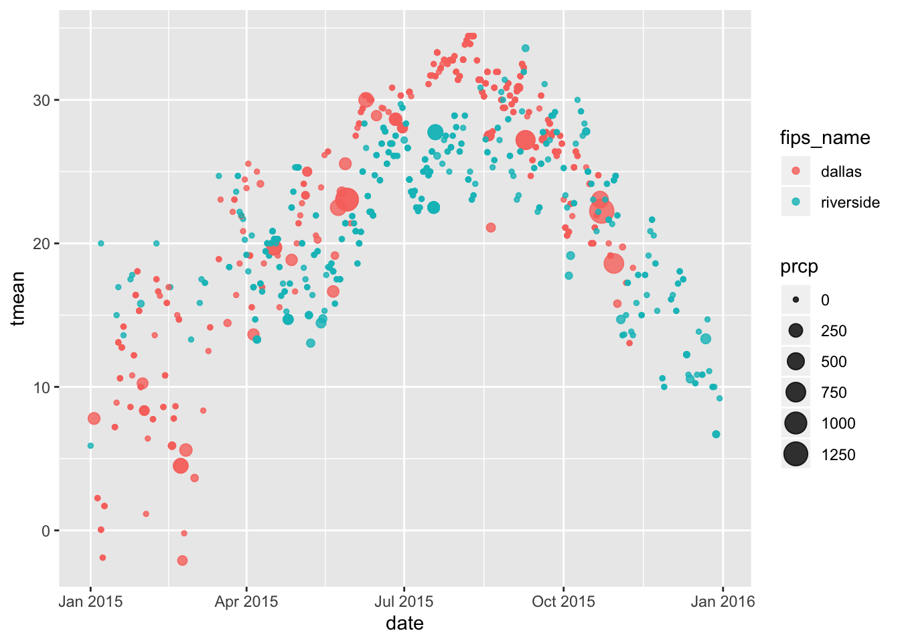
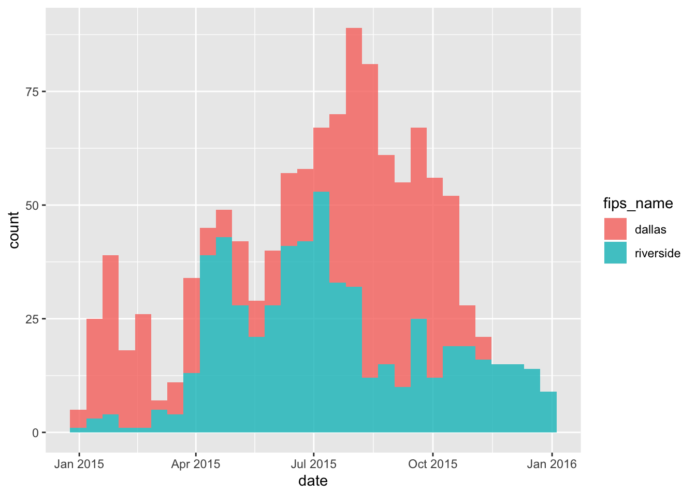

fire = read_csv("./final_report/data/fire_0515.csv")
state.abb = append(state.abb, c("DC", "PR"))
state.name = append(state.name, c("District of Columbia", "Puerto Rico"))
tidy_fire =
fire %>%
separate(cont_time, into = c("cont_hour","cont_min") ,sep = 2) %>%
separate(discovery_time, into = c("disc_hour","disc_min") ,sep = 2) %>%
mutate(cont_hour = as.numeric(cont_hour),
cont_min = as.numeric(cont_min),
disc_hour = as.numeric(disc_hour),
disc_min = as.numeric(disc_min)) %>%
# change julian days
mutate(discovery_date = as.Date(discovery_date - 2458014.5, origin = '2017-09-18'),
cont_date = as.Date(cont_date - 2458014.5, origin = '2017-09-18'),
duration_day = as.numeric(difftime(cont_date, discovery_date, units = "days"))) %>%
mutate(
duration_hour = cont_hour - disc_hour,
duration_min = cont_min - disc_min,
duration = duration_day * 24 + duration_hour + duration_min / 60
) %>%
select(-duration_day, -duration_hour,-duration_min) %>%
mutate(fips_name = tolower(fips_name),
state = fct_inorder(state),
fire_size_class = fct_inorder(fire_size_class),
region = state.name[match(state, state.abb)],
cause = as.factor(stat_cause_descr),
cause = relevel(cause, ref = "Missing/Undefined"))model_1 = lm(fire_size ~ duration + stat_cause_descr, data = tidy_fire)
summary(model_1)##
## Call:
## lm(formula = fire_size ~ duration + stat_cause_descr, data = tidy_fire)
##
## Residuals:
## Min 1Q Median 3Q Max
## -64921 -118 -5 6 556934
##
## Coefficients:
## Estimate Std. Error t value Pr(>|t|)
## (Intercept) 2.93474 15.01682 0.195 0.845056
## duration 1.83897 0.02032 90.480 < 2e-16
## stat_cause_descrCampfire 32.35130 27.76152 1.165 0.243886
## stat_cause_descrChildren -13.46524 38.22848 -0.352 0.724665
## stat_cause_descrDebris Burning 1.32267 19.66725 0.067 0.946381
## stat_cause_descrEquipment Use 70.94344 27.44424 2.585 0.009738
## stat_cause_descrFireworks -7.81690 49.51444 -0.158 0.874558
## stat_cause_descrLightning 307.90558 19.41122 15.862 < 2e-16
## stat_cause_descrMiscellaneous -9.92372 19.38098 -0.512 0.608627
## stat_cause_descrMissing/Undefined 113.27270 29.84546 3.795 0.000147
## stat_cause_descrPowerline 132.62189 53.20140 2.493 0.012673
## stat_cause_descrRailroad -15.06504 68.26886 -0.221 0.825348
## stat_cause_descrSmoking -68.19441 42.89458 -1.590 0.111877
## stat_cause_descrStructure 21.82560 93.47747 0.233 0.815385
##
## (Intercept)
## duration ***
## stat_cause_descrCampfire
## stat_cause_descrChildren
## stat_cause_descrDebris Burning
## stat_cause_descrEquipment Use **
## stat_cause_descrFireworks
## stat_cause_descrLightning ***
## stat_cause_descrMiscellaneous
## stat_cause_descrMissing/Undefined ***
## stat_cause_descrPowerline *
## stat_cause_descrRailroad
## stat_cause_descrSmoking
## stat_cause_descrStructure
## ---
## Signif. codes: 0 '***' 0.001 '**' 0.01 '*' 0.05 '.' 0.1 ' ' 1
##
## Residual standard error: 3774 on 453560 degrees of freedom
## (458544 observations deleted due to missingness)
## Multiple R-squared: 0.01993, Adjusted R-squared: 0.0199
## F-statistic: 709.5 on 13 and 453560 DF, p-value: < 2.2e-16fire_15 = tidy_fire %>%
filter(state == "CA" | state == "TX") %>%
filter(fire_year == 2015) %>%
drop_na(fips_code, fips_name)
fire_15 %>%
group_by(region, fips_name) %>%
summarise(n = n()) %>%
ungroup() %>%
group_by(region) %>%
mutate(rank = rank(-n)) %>%
filter(rank == 1) %>%
select(-rank)## # A tibble: 2 x 3
## # Groups: region [2]
## region fips_name n
## <chr> <chr> <int>
## 1 California riverside 573
## 2 Texas dallas 612stations = ghcnd_stations()
stations_15 = stations %>%
mutate(name = tolower(name)) %>%
filter(state == "CA" | state == "TX") %>%
filter(str_detect(name, c("riverside", "dallas")),
last_year == 2019,
element == "TMAX")
station_id = pull(stations_15, id)
weather_15 = meteo_pull_monitors(station_id,
date_min = "2015-01-01",
date_max = "2015-12-31",
var = c("PRCP", "TMAX", "TMIN")) %>%
mutate(tmax = tmax / 10,
tmin = tmin / 10,
tmean = (tmax + tmin) / 2,
fips_name = recode(id,
"USW00003171" = "riverside",
"USW00013960" = "dallas"))
fire_15 = fire_15 %>%
filter(fips_name == "riverside" | fips_name == "dallas") %>%
mutate(date = discovery_date)
fire_15_weather = left_join(fire_15, weather_15, by = c("date", "fips_name"))
fire_15_weather %>%
ggplot(aes(x = date, group = fips_name, color = fips_name)) +
geom_point(aes(y = tmean, size = prcp), alpha = .8)
fire_15_weather %>%
group_by(date, fips_name) %>%
ggplot(aes(x = date, fill = fips_name)) +
geom_histogram(alpha = 0.8) +
scale_color_viridis()
fire_15_count = fire_15_weather %>%
group_by(date, tmean, prcp, stat_cause_descr) %>%
summarise(n = n())